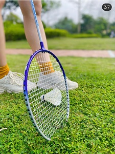

羽毛球
日常锻炼中，我比较喜欢羽毛球，首先我觉得羽毛球是一种趣味性运动，能让我身心愉悦，其次羽毛球并不是一种剧烈运动 但也能起到锻炼身体，增强体质的作用，最后我觉得羽毛球能较好的释放我的压力，它对专注度的要求比较高，在那一瞬间 我的眼里只有羽毛球，提升专注度的同时达到调节情绪的作用。
阅读
高尔基曾说“书籍是人类进步的阶梯”，在我看来，阅读让人心静，当觉得自己心情烦躁，做事没有效率的时候，不妨坐下来看看书； 其次在阅读中了解一些前沿的科学知识是十分有必要的；同时阅读在我们的日常交际中可以得到体现，有利于培养我们良好的交际能力。
看电影
在我们日常的忙碌工作中，看电影不失为一个好的放松方式；同时电影中蕴含着丰富的内涵，可以开拓我们的视野，丰富自己的情感，加深 对不同文化底蕴的理解；在这里我想推荐《当幸福来敲门》这部电影给大家，在我高考那段时间，这部电影给了我很大的鼓舞，命运掌握在 自己手里，希望不管处境多么艰难，我们都要拼搏到无能为力。